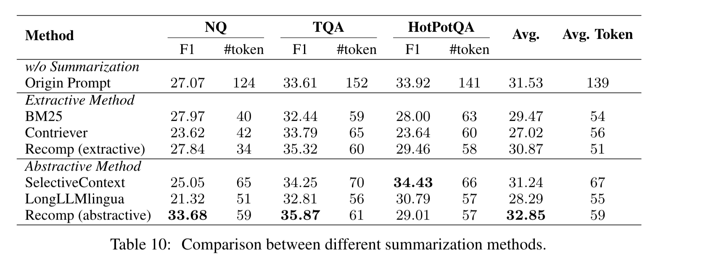

这篇论文提供了一个RAG实践的框架，介绍了在RAG pipline中每个阶段该如何进行优化。通过这篇论文，可以了解到RAG在检索和生成阶段的核心细节，有助于加深对RAG的了解，为今后的实现提供了一定的指导意义。

- 查询分类
- LLM+RAG虽然可以一定程度上缓解大模型幻觉问题，但是也同时会增加响应的时长。所以建议对query进行分类，先筛选哪些需要利用RAG增强，把一些LLM可以自行解决的问题过滤出来，避免无效的检索，提高大模型的处理效率
- 所以这里应该是需要实现一个分类器，可以识别一个query是否需要Retrieval，这里可以看下有没有现成的模型或者是利用强化学习自己训练一个分类模型
- 分块
- 块的大小会影响生成的效率，大的块能够提供充分的上下文，但是却增加了处理时间；小的块能够减少处理事件，但是缺少充分的上下文。论文中提到使用LLM-Embedder作为嵌入模型，small chunk sizes为175 tokens，large chunk sizes为512tokens，块重叠为20tokens的时候，使用滑动窗口效果最好
- 文中还提到，有比如标题，关键字的元数据和假设问题可以提高检索，这个也可能成为未来研究的一个方向
- 向量数据库
- 在经过embedding之后，文本块会转为向量，我们会将向量存储到专门的向量数据库里面，通过特定的查询索引和ANN算法等进行检索
- 在数据库选型上面，论文从多索引类型，海量向量支持，混合检索和云本地几个方面对比了5大开源向量数据库，最终建议使用Milvus

- 检索方法
- 给定一个查询，检索器会选择前k个相关文档，然后通过生成模型进行生成。但是query往往不够理想，容易缺失语义和上下文，论文中推荐使用查询分类中提到的llm-embedding模型作为query和文档的编码器
- query重写：query重写是为了更好匹配相关文档，经过llm的重写，可以增减检索的相关性
- query分解：将用户的查询分解为多个子查询，然后进行检索，但是这种方式的实现复杂度很高（论文当时应该是想的利用COT，将问题分解，不知道当时还有没有这种概念）
- 伪文档生成：根据用户的query生成一个伪文档，然后根据这个伪文档去生成，比如HyDE
- 根据实验对比，发现监督学习的效果好于无监督学习，同时结合HyDE和混合搜索的效果最好
- 生成不同的伪文档进行串联起来，可以增加生成效果，但是也增加了耗时，而且这个效果不会随着伪文档数量的增加而增加，所以建议使用单个伪文档即可
- 文中还探索了不同的$\alpha$在混合检索中的影响，$\alpha$是控制稀疏检索和密集检索组件之间的权重，相关性分数计算的公式为：$S_h = \alpha*S_s+S_d$，$S_s$表示的是稀疏检索，$S_d$表示的是混合检索，其中当$\alpha=0.3$的时候效果最好
- 这里拓展一下稀疏检索和混合检索，两种方法都是从大量数据检索关键信息的手段
- 稀疏检索是通过将查询进行分词，将文本切分成词的集合，然后构建倒排索引，计算每个文档的相关性分数，分数越高认为相关性越好。常用于传统的搜索
- 混合检索是将文本映射到一个低维的空间，每个文本表示一个密集向量，通过词嵌入技术将文本表示为多个维度数值的向量，然后将查询转为输入向量，计算输入向量和文档向量之间的相关性，找到相似度最高的向量
- 给定一个查询，检索器会选择前k个相关文档，然后通过生成模型进行生成。但是query往往不够理想，容易缺失语义和上下文，论文中推荐使用查询分类中提到的llm-embedding模型作为query和文档的编码器
- 重排序方法
- 在初始检索之后，采用重新排序阶段可以增强检索文档的相关性，确保最相关的信息可以展示在最前面，通过更加精确和耗时的方法，增加查询和文档之间的相关性
- 论文提到两种方式对文档进行重排序
- DLM重新排序：利用深度语言模型对文档进行重新排序，通过大模型的特征识别和提取，这些经过微调的模型可以对文档的相关性进行True或者False的分类，文档会被基于True的token进行排序
- TILDE重新排序：基于预测模型词汇表中的每个查询词的标记概率，独立地计算每个查询词的相似度，把对文档进行重新排序的依据建立在每个查询词的分析上，而不是将查询看作一个整体
- 实验结果表明，在使用monoT5作为平衡性能和效率的综合方法下，RankLLaMA使用于实现最佳性能，TLDEv2在固定集合上实现最快体验是理想的选择
- 文档重新打包
- 检索结果可能会受到文档顺序的影响，在重排序的工作流之后，论文加入了一个简洁的重新打包模块，有三种重新打包的方式
- 正向：正向就是按照重新排序之后的相关性得分从高到低进行重新打包
- 反向：反响就是按照重新排序之后的相关性得分从低到高进行重新打包
- 两边：将相关性文档放到输入的开头和结尾（论文使用）
- 检索结果可能会受到文档顺序的影响，在重排序的工作流之后，论文加入了一个简洁的重新打包模块，有三种重新打包的方式
- 总结
- 检索结果可能受到不相关信息的影响，长提示会减慢推理过程，所以这里提到可以将检索到的文档进行总结，总结的方法可以是抽取式或者是抽象的
- extractive 抽取式：将文本分割为多个句子，然后根据重要性对他们评分和排序
- abstractive 抽象式：从多个文档中合成信息并改写生成摘要
- 文中提到了基于查询的三个方法
- Recomp：是一种具有抽取式和摘要式的方法，其中抽取式压缩器会从文本选择有用的句子，摘要式压缩器能综合来自多个文档的信息进行处理
- LongLLMLingua：聚焦与查询相关的关键信息
- 选择性上下文：通过识别和删除输入上下文中的冗余信息提高LLM效率，这里使用基于因果模型计算的自我信息来评估词汇单元的信息量
- 基于实验结果，推荐使用Recomp，但是LongLLMLingua表现更好的泛化能力，所以也可以是一个替代方法

- 检索结果可能受到不相关信息的影响，长提示会减慢推理过程，所以这里提到可以将检索到的文档进行总结，总结的方法可以是抽取式或者是抽象的
- 生成器微调
- 生成器主要是根据用户的输入和检索到的文档生成一篇摘要性的工作，这里就采用用户的查询和文档相关性数据对生成器的初始模型进行微调
- 实验结果表明最优的混合策略是混合正样本和随机采样的样本

RAG最佳实践汇总
- 基于前面每个模块最优方案的探索，将所有模块最优方案集成为一个系统，然后再次逐个模块内部选择最优的方案，实验结果如下